Software & Updates
|
|
Software Tutorials - a
new page where you can discover how to install and configure useful software.
Updates
Change your Software Updates Country Location
Install Additional Software
Remove Additional Software
Adding a PPA
File Encryption
Creating & Extracting Zip files
A word on changing Desktop Environments
Installing & Removing Software
Installing and removing software in Linux is much easier than in Windows. The vast majority of programs that you may want/need to install are all centrally located in what are called software repositories (repos). Rather than searching the web, downloading programs from various sites (some of which may not be reliable), running the installer, rebooting, etc., available software is all centrally located and available for installation in seconds. The packages/(programs) in the repositories are tested, approved for inclusion in the repos and securely signed to insure their validity.
There are a few common methods for installing and removing software. Linux Lite comes with the Synaptic Package Manager. When you already know the name of the program you want, Synaptic makes installing easy.
IMPORTANT: Before you run Install/Remove
Software for the first time, read this first.
Then come back to here to learn how to install and remove software.
To install software use the following steps:
1. Click on Menu, System, Install/Remove Software
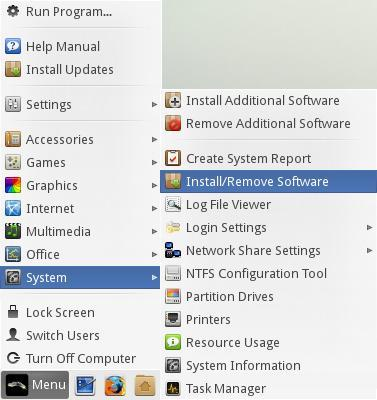
2. Make sure All is selected in the left pane and in the Quick Filter
or spy glass
 type in your search query. In
this example we will search for the 'audacious' music
player.
type in your search query. In
this example we will search for the 'audacious' music
player.
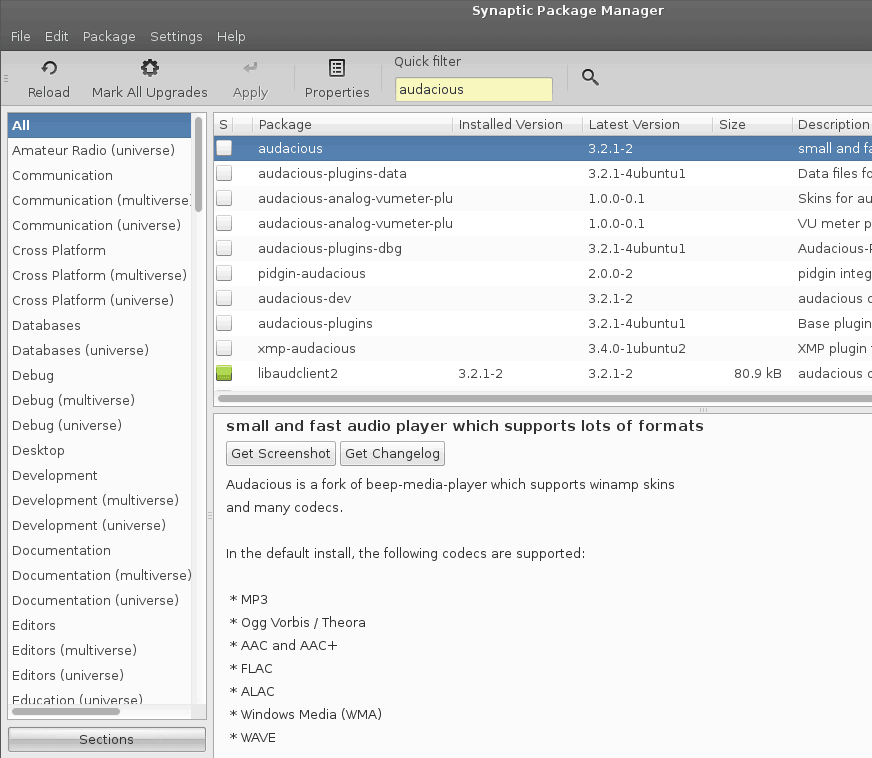
3. Double click on the package you want to install.
4. Some software will ask you to Mark additional required changes? These are also known as dependencies and are required for the program to function properly.
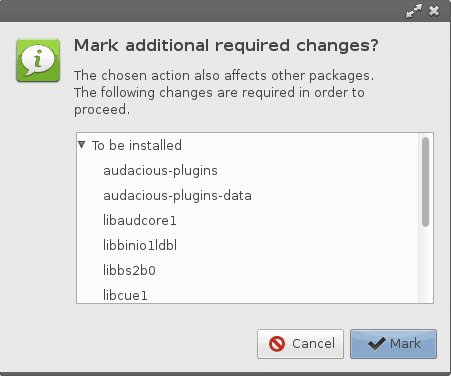
5. Click on Mark. Now hit the Apply button on the Synaptic toolbar. The software will install and a Menu entry will be created in the relevant Menu category. For audacious the Menu category would be Multimedia.
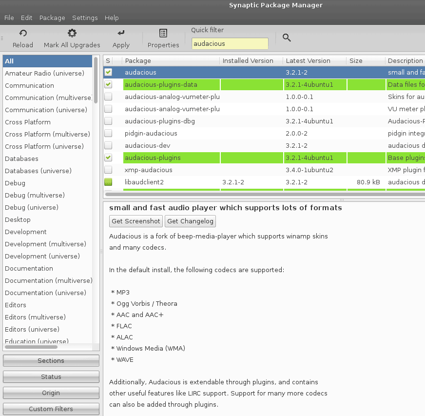
6. Go to the Menu and your new software will be there. An alternative way to find your new software is to click on Menu, Accessories, Application Finder. Type your program name in the Search box and the result will display on the right. Double click on the program name and it will launch for you.
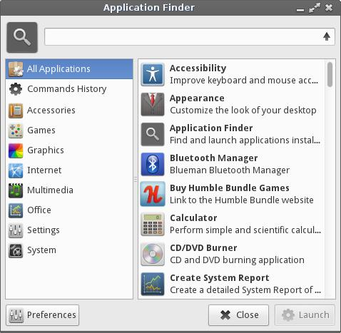
Uninstalling Software:
7. Uninstalling software is the reverse process of
installing software in the Synaptic Package Manager. Type
the name of the software into the Quick Filter or spy
glass
box.
8. Right click on the software and select Mark for Removal. Now hit the Apply button on the Synaptic toolbar and your software will uninstall. Be very careful with this process as you can inadvertently uninstall crucial system software. If you have any doubts, please search the net first to see if it is safe to uninstall the software. Synaptic is pretty good at warning you should there be any potential problems.
Keeping Linux Lite up to date is a simple process.
At the top of your Menu, you will see Install Updates.
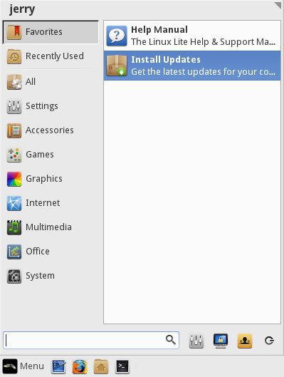
We've made the update process as simple as possible. Simply click on Install Updates and you will be asked for your password. The program will then search for updates and if it finds any it will ask you if you want to continue. Type Y and then hit enter if you do.
(Note: The update process updates all software on the system that came from the repos. Unlike in Windows, there is no need to update individual software programs manually. When you run Install Updates, that will update all packages that have updates available for them.)
Change your Software Updates Country Location
To ensure that you get your updates and software downloaded
as fast as possible, try selecting a location close to you.
In the following tutorial we will show you how to do this.
Click on Menu, System, Install/Remove Software and enter your password.
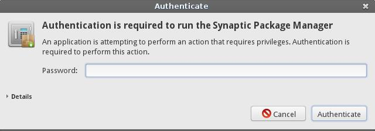
Synaptic Package Manager will open up, click on Settings, Repositories.

The Software Sources window will pop up. From the Download from: drop down box, select Other...

A Choose a Download Server box will pop up. From here select your country, and then a server, preferably an Ubuntu server if it is listed or another server if an Ubuntu server is not in the list. Click on the Choose Server button once you have made your selection. Now click on Close in the Software Sources window.
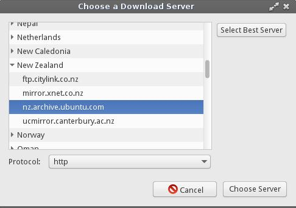
In the top left of the Synaptic Package Manager window, click on the Reload button. This will change all the software sources to your location for faster downloads.

The following window will appear, then close when it has finished.
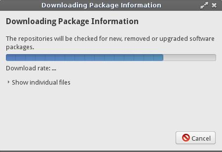
You should now have faster downloads for updates and software installs in Synaptic Package Manager from a location much nearer you. Click here to learn how to install and remove software.
Installing some of the more widely popular programs on Linux Lite like Chrome, Dropbox and Skype is just a few simple steps on Linux Lite. You can also choose to update your system at any time by choosing option 24 (see below).
Go to Menu, System, Install Additional Software.
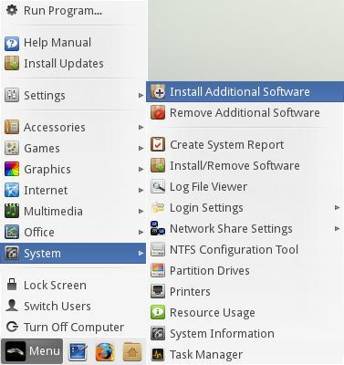
Next, you'll see the following window pop up. Select a piece of software, in this example we'll choose to install the Chrome Web Browser, press the 2 key and then enter.
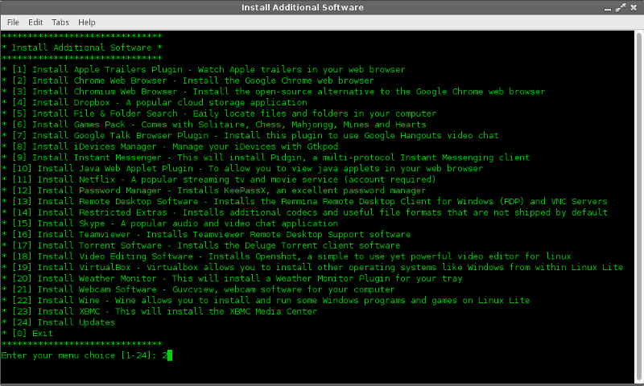
In the next dialog, we can see some information regarding the software we have chosen to install. It pays to read this each time as the information is a very important part of the install process. Click Yes when ready.
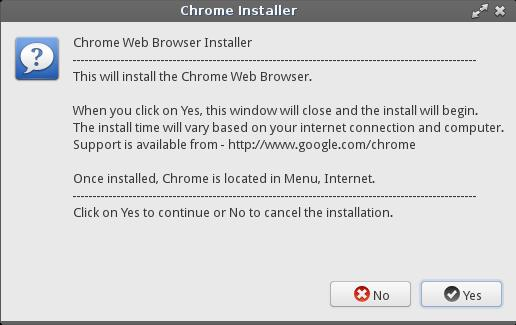
Enter your password and click Ok.

The program is now being downloaded and installed automatically for you. This can take anywhere from a few seconds to a few minutes depending on the size of the program and the speed of your internet connection.
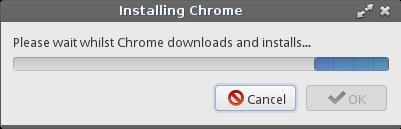
When the install is complete, you'll be given the option of using your software straight away. Click Yes if you want to do this.
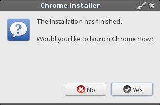
If you select No, the dialog box will inform you where to find your newly installed program.
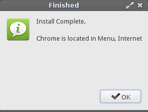
If at anytime you wish to exit the program, select option 0 and press enter.
Removing Additional Software in Linux Lite is just a few simple steps.
Click on Menu, System, Remove Additional Software.
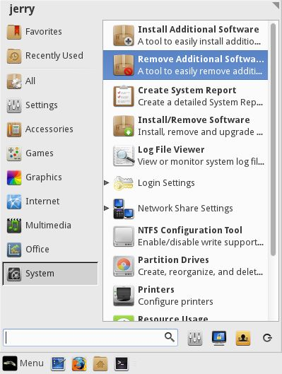
In this example, we'll choose to remove Chrome, select option
2 and press enter.
If at anytime you wish to exit the program, select option
0 and press enter.
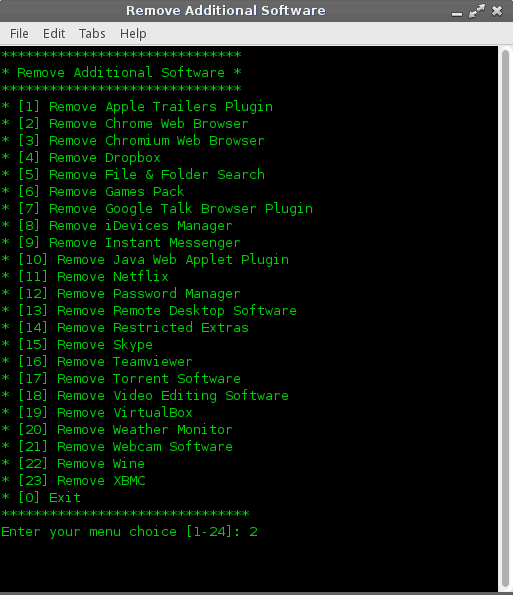
In the next window, we're asked for our password, type in your password and press enter.
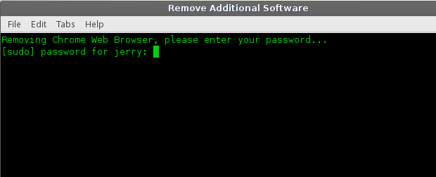
You'll get a confirmation at this point asking if you want to proceed, type y and press enter. If you chose the wrong menu option in the beginning, type n and press enter, this will take you back to the main Remove Additional Software menu.
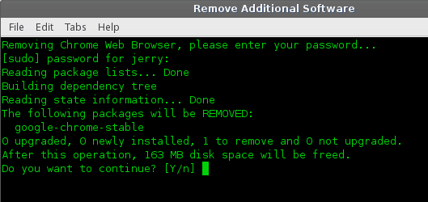
The software is now being removed. Once this is completed, you'll be taken back to the main Remove Additional Software menu.
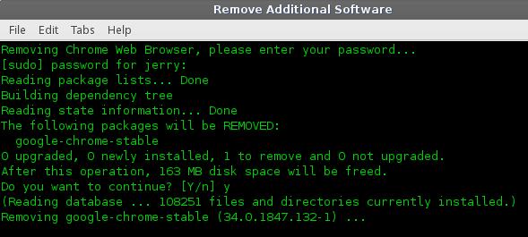
A PPA is a repository containing one or more applications. These are often set up for new software programs or updated versions of some applications. To add a new PPA to your system, follow the guide below.
Go to Menu, System, Install/Remove Programs. Enter your password when asked.
Go to Settings, Repositories.

Click on the Other Software tab and click on the Add
(bottom left) button and paste into the box the address of
the PPA.
In this example, we are going to add Spotify to our
system. Now click on Add Source. To finish, click on
Close.
Close Synaptic Package Manager.
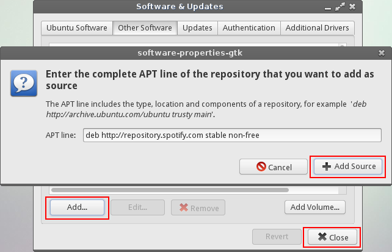
Each PPA comes with a signed key. This is a security measure and ensures that the person who created the PPA has followed strict standards. Open up a terminal and type in the key string:
| sudo apt-key adv --keyserver keyserver.ubuntu.com --recv-keys 94558F59 |

Now in the same terminal type in:
| sudo apt-get update && sudo apt-get install spotify-client |

This will update your sources to include the new Spotify repository. The second part of the command will install Spotify for you. Your new program is now installed and ready to use.

In todays world, security of your personal files is important. Whether your transporting documents on a USB drive or emailing sensitive information to a friend, colleague or company, encryption is a necessary security measure.
1. First we need to install the encryption software, in this example we'll use mcrypt. Encryption algorithms include DES, Blowfish, ARCFOUR, Enigma, GOST, LOKI97, RC2, Serpent, Threeway, Twofish, WAKE, and XTEA.
Open a terminal and type:
sudo apt-get install mcrypt -y
2. Once mcrypt is installed, we'll set a custom right click action in our file manager to make encryption of files super easy. Open up your home folder, click on Edit, Configure custom actions.

3. Click the plus + button on the right and enter in the following information, in the Command box type in:
x-terminal-emulator -t "Encrypt file..." -e "mcrypt %f"

Click on Appearance Conditions tab and tick every box except Directories.
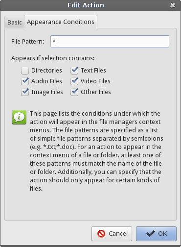
4. Go back to the Basic tab and click on the No icon button and browse to Status Icons, and select the changes-prevent icon and click on Ok, then Ok on the next box.

Your Custom Actions box should now look like this:
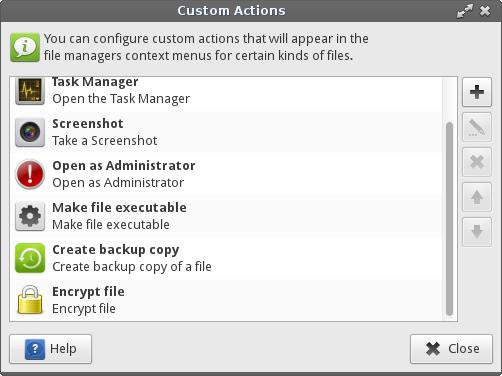
5. Now we need to set up the Decrypt option. Repeat step 3 only this time enter in the following information, in the Command box type in:
x-terminal-emulator -t "Decrypt file..." -e "mcrypt -d %f"

Click on Appearance Conditions tab and only tick the Other Files box, leave the rest unticked.
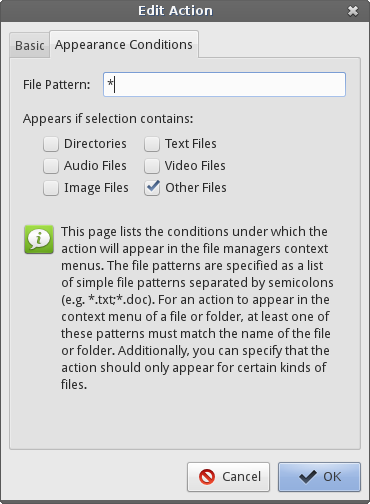
6. Repeat step 4 only this time select the changes-allow icon. The click on Ok, then Ok on the next box.

7. Your Custom Actions box should now look like this:
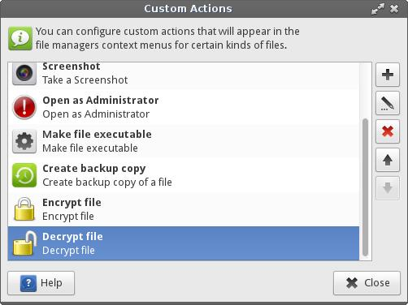
8. Click on the Close button on the Custom Actions box.
Now we're ready to encrypt a file (only files can be encrypted with this method, not folders)
9. Right click on a file and select Encrypt file.

10. A window will pop up asking you to type in a password, it will then ask you to enter the same password again. Choose a good strong password, a mixture of letters, numbers and characters that you can easily remember.
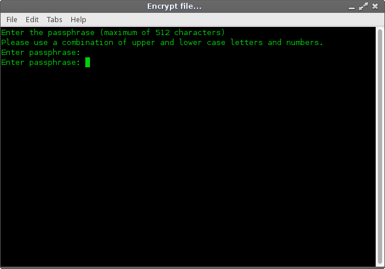
You can now delete the unencrypted file permanently.
Here you will see we have a new file with the letters '.nc'
attached to the end of it signifying that the file is now
encrypted.

11. To decrypt the file later, right click on the file and select Decrypt file.

12. A window will pop up asking you to type in a password. Enter the password you created in step 10.
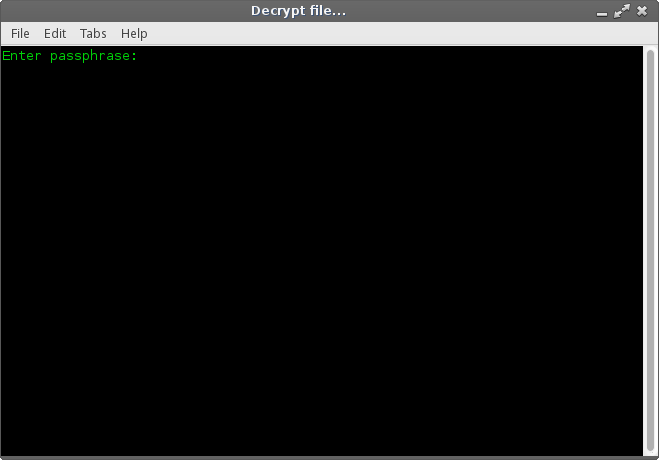
As you can see our file is decrypted and ready to view.

If you make any changes to the decrypted file, you need to delete the existing encrypted file and re-encypt the changed file.
Creating and Extracting Zip files
Sometimes we may have a collection of pictures to send someone over email. Good practice is to zip these files up so that the overall size is much less. The following is an example of how to zip files and folders.
Linux Lite supports creation and extraction of these file types: .zip .rar .tar .tar.gz .tar.bz2 .7z
Creating a zip file
Right click on any file or folder and select Create Archive.

A new window will pop up. From here, type in the Name:
of the file eg. file.zip
For the Archive type select zip and when you
are ready, click on the Create button.
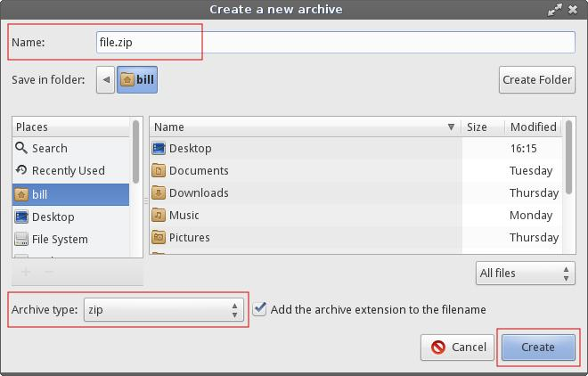
We now have a file called file.zip
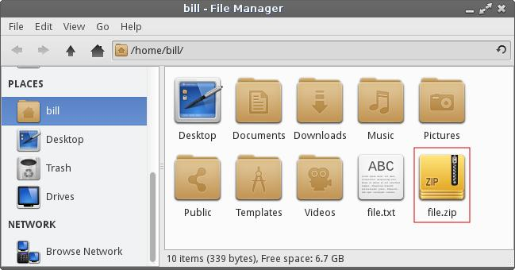
Zipping up multiple files
Best practice here is to place all the files you want to zip up into a folder. In this example we have a folder called holiday and inside 4 files.

Go back to your home folder and right click on the folder
containing the files you wish to zip up.
Right click the folder and select Create Archive

A new window will pop up. From here, type in the Name:
of the file eg. holiday.zip
For the Archive type select zip and when you
are ready, click on the Create button.
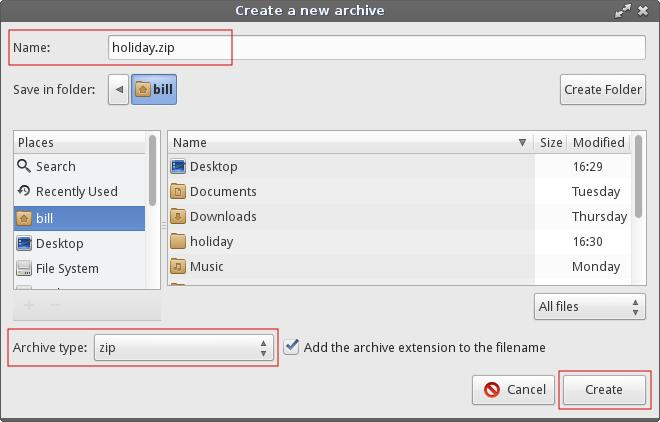
We now have a zip file called holiday.zip
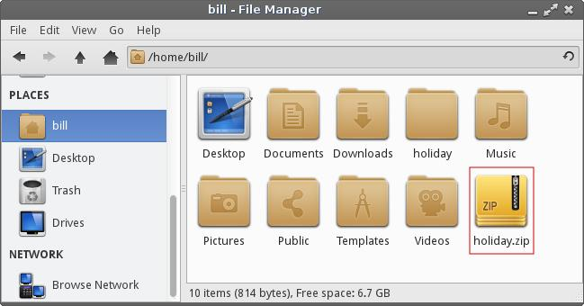
Extracting Zip files
Right click on the zip file and select Extract Here

We how have a folder called holiday, with our 4 files inside of it.
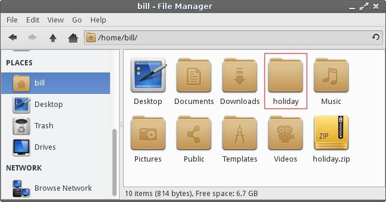
This distro is a heavily modified version of the XFCE desktop environment. However, being GNU/Linux based allows people the freedom to modify their system as they see fit. There are numerous desktop environments in GNU/Linux. Including but not limited to:
Enlightenment
Gnome
KDE
LXDE
Razor-qt
If you desire to install another desktop environment, we cannot provide specific instructions on how to do this. There are far to many variables involved and much can go wrong. This kind of system modification is best left to experienced Linux users. The whole philosophy behind Linux Lite is to provide new users to Linux based operating systems an easy to use, functional desktop experience. Our support time is better spent dedicated to helping existing Linux Lite users on the XFCE desktop.